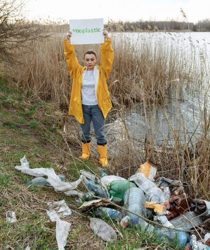
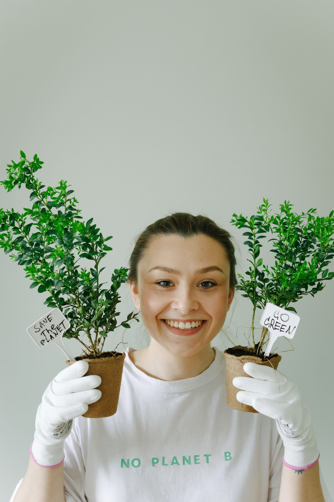
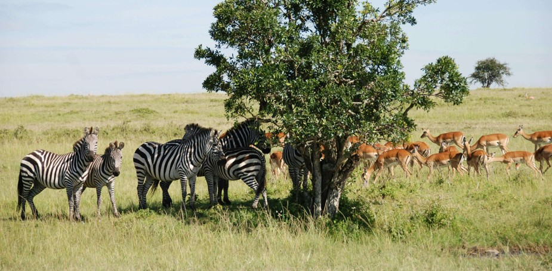
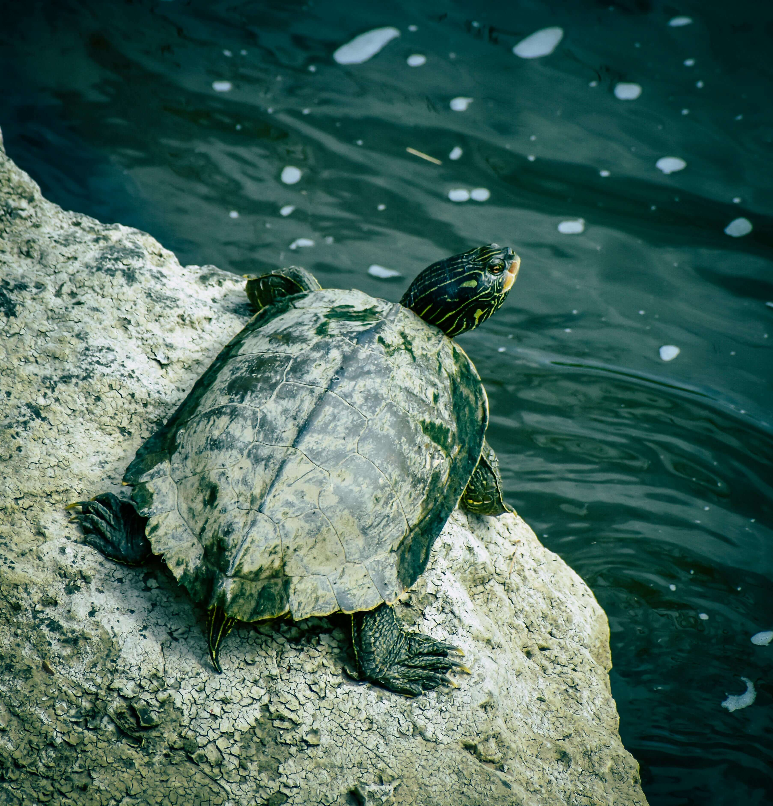

Corby Conservation
Go Green
Think Green
Be Green
Our Services
River Conservation
The use of recycled polymer has a number of environmental benefits, that include, reduced pressure on natural resources and the associated energy consumption from raw material extraction and the development of a more sustainable supply chain.
Grow Your Forest
We plant during the planting season in order for them to establish properly and grow into a healthy and resilient woodland. Our planting season runs from November to March.
Wildlife Conservation
Corby Conservation Union, in partnership with local communities, are working tirelessly to keep these magnificent creatures safe. But we need your help to sustain this critical conservation work.
Aquatic Conservation
The prevailing threats in aquatic systems are habitat loss and degradation, invasive species, pollution, over-exploitation and climate change. Unpredictable synergies with climate change greatly complicate the impacts of other stressors that threaten many marine and freshwater fishes.